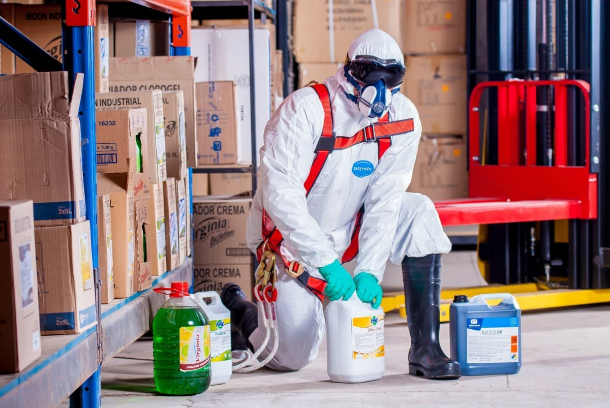

MERT SEFA ÜNAL
OCCUPATIONAL HEALTH AND SAFETY SPECIALIST
OCCUPATIONAL HEALTH AND SAFETY SPECIALIST
I worked as an occupational safety specialist in different places from hospitals to banks, shopping centers (shopping malls) to restaurants and schools. I assumed the responsibilities of working directly in the field. I traveled through the places I was responsible for in the areas I worked for, and made suggestions. I have checked the documentation and identified the deficiencies and made and implemented the completion plans. I organized and managed OHS meetings.
It would not be wrong to say that the most important part of occupational safety is to observe. During this monitoring process, it is necessary to monitor both the working environment and the studies with a special attention. Occupational health and safety studies are based on human life; Acting with the awareness that the work done is directly related to human lives. It improves both the expert and his environment.
I proceeded by increasing my knowledge and experience in both my direct observations and documentation reviews. So much so that I easily got myself accepted to the projects I just started. In addition to the human factor at the foundation of occupational health safety, I did the work with the effort to minimize the risks by considering the continuation of the work.
I have studied different aspects of the study area, such as shopping malls, hospitals, banks, restaurants and schools, and I have had different experiences in each field. I have inspected exterior lift control and working at height equipment. I have carried out all the works required by the OHS regulations such as risk assessment studies, determinations and recommendations, emergency practice controls, preparation of emergency plans, and holding OHS committees. Briefly competencies:
- Field Audit
- Documentation
- Risk Assessment
- Emergency Plan
- Emergency Practice
- OHS Meeting
- OHS Training
- Determinations and Recommendations